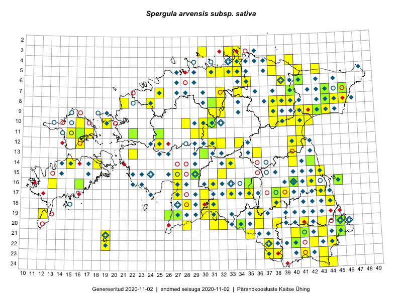

Spergula arvensis subsp. sativa — külvi-nälghein
Kaardile koondatud taksonid: Spergula arvensis subsp. sativa L. (157); Spergula sativa Boenn. (1)

Kaart põhineb 158 kirjel, neist:
vaatlusi 130
eksemplare 28
Kaasaegsed1 leiukohad asuvad 123 ruudus.
Andmed “Eesti taimede levikuatlasest”,2 sulgudes ruutude arv:3
● 1971–2005 (185)
○ 1921–1970 (40)
△ kuni 1920 (0)
+ hävinud (0)
? kaheldav (0)
Lisaruudud teistest andmebaasidest:4
ELF: 2006– . . . (0)
PKÜ: 2006– . . . (0)
ELF: 1971–2005 (0)
PKÜ: 1997–2005 (1)
| Ruut | Vaatleja(d) | Vaatlusaeg | Kirje PlutoFis |
|---|---|---|---|
| 24-43 | Ott Luuk, Peedu Saar | 2015-08-13 | ruut/ala: Spergula arvensis subsp. sativa L. |
| 23-43 | Ott Luuk, Peedu Saar | 2015-08-12 | ruut/ala: Spergula arvensis subsp. sativa L. |
| 08-44 | Peedu Saar, Liina Oja | 2015-07-20 | ruut/ala: Spergula arvensis subsp. sativa L. |
| 13-40 | Peedu Saar | 2015-08-10 | ruut/ala: Spergula arvensis subsp. sativa L. |
| 07-44 | Tiit Hallikma, Toomas Kukk | 2015-07-20 | ruut/ala: Spergula arvensis subsp. sativa L. |
| 11-41 | Peedu Saar | 2015-08-22 | ruut/ala: Spergula arvensis subsp. sativa L. |
| 07-40 | Ott Luuk, Hannes Pehlak | 2015-07-23 | ruut/ala: Spergula arvensis subsp. sativa L. |
| 16-42 | Peedu Saar | 2015-08-21 | ruut/ala: Spergula arvensis subsp. sativa L. |
| 11-29 | Ott Luuk, Toivo Sepp | 2015-08-20 | ruut/ala: Spergula arvensis subsp. sativa L. |
| 09-32 | Ott Luuk, Toivo Sepp | 2015-08-18 | ruut/ala: Spergula arvensis subsp. sativa L. |
| 10-30 | Toivo Sepp, Ott Luuk | 2015-08-21 | ruut/ala: Spergula arvensis subsp. sativa L. |
| 11-30 | Toivo Sepp, Elle Roosaluste | 2015-07-04 | ruut/ala: Spergula arvensis subsp. sativa L. |
| 11-30 | Toivo Sepp, Ott Luuk | 2015-08-20 | ruut/ala: Spergula arvensis subsp. sativa L. |
| 08-40 | Toomas Kukk, Tiit Hallikma | 2016-07-29 | ruut/ala: Spergula arvensis subsp. sativa L. |
| 07-40 | Toomas Kukk, Tiit Hallikma | 2016-07-29 | ruut/ala: Spergula arvensis subsp. sativa L. |
| 20-34 | Thea Kull, Eerik Leibak | 2016-07-18 | ruut/ala: Spergula arvensis subsp. sativa L. |
| 17-33 | Toomas Kukk, Eerik Leibak | 2016-07-20 | ruut/ala: Spergula arvensis subsp. sativa L. |
| 18-31 | Toomas Kukk, Hannes Pehlak | 2016-07-19 | ruut/ala: Spergula arvensis subsp. sativa L. |
| 15-32 | Toomas Kukk, Liina Oja | 2016-07-21 | ruut/ala: Spergula arvensis subsp. sativa L. |
| 13-36 | Toomas Kukk, Raivo Kalle | 2016-07-22 | ruut/ala: Spergula arvensis subsp. sativa L. |
| 10-40 | Ott Luuk, Eerik Leibak | 2016-08-03 | ruut/ala: Spergula arvensis subsp. sativa L. |
| 10-41 | Ott Luuk, Eerik Leibak | 2016-08-04 | ruut/ala: Spergula arvensis subsp. sativa L. |
| 10-42 | Ott Luuk, Eerik Leibak | 2016-08-04 | ruut/ala: Spergula arvensis subsp. sativa L. |
| 09-42 | Ott Luuk, Eerik Leibak | 2016-08-05 | ruut/ala: Spergula arvensis subsp. sativa L. |
| 10-38 | Ott Luuk, Eerik Leibak | 2016-08-08 | ruut/ala: Spergula arvensis subsp. sativa L. |
| 09-38 | Ott Luuk, Eerik Leibak | 2016-08-08 | ruut/ala: Spergula arvensis subsp. sativa L. |
| 11-15 | Thea Kull, Peedu Saar | 2016-08-09 | ruut/ala: Spergula arvensis subsp. sativa L. |
| 12-16 | Sander Laherand, Thea Kull, Nele Jõessar | 2016-08-11 | ruut/ala: Spergula arvensis subsp. sativa L. |
| 20-43 | Peedu Saar, Thea Kull | 2016-08-05 | ruut/ala: Spergula arvensis subsp. sativa L. |
| 22-44 | Peedu Saar, Karin Kikas | 2016-08-19 | ruut/ala: Spergula arvensis subsp. sativa L. |
| 20-36 | Thea Kull, Ott Luuk | 2016-08-23 | ruut/ala: Spergula arvensis subsp. sativa L. |
| 05-32 | Toomas Kukk, Sander Laherand | 2016-08-31 | ruut/ala: Spergula arvensis subsp. sativa L. |
| 21-19 | Meeli Mesipuu, Ott Luuk | 2016-09-10 | ruut/ala: Spergula arvensis subsp. sativa L. |
| 22-19 | Ott Luuk, Meeli Mesipuu | 2016-09-10 | ruut/ala: Spergula arvensis subsp. sativa L. |
| 05-43 | Peedu Saar, Toomas Kukk | 2016-09-13 | ruut/ala: Spergula arvensis subsp. sativa L. |
| 14-15 | Mari Reitalu, Sirje Azarov | 2016-08-09 | ruut/ala: Spergula arvensis subsp. sativa L. |
| 14-18 | Mari Reitalu, Sirje Azarov | 2016-08-09 | ruut/ala: Spergula arvensis subsp. sativa L. |
| 09-32 | Toomas Kukk, Peedu Saar | 2016-09-16 | ruut/ala: Spergula arvensis subsp. sativa L. |
| 20-32 | Meeli Mesipuu, Ott Luuk | 2016-09-18 | ruut/ala: Spergula arvensis subsp. sativa L. |
| 09-31 | Peedu Saar, Ott Luuk | 2016-09-07 | ruut/ala: Spergula arvensis subsp. sativa L. |
| 07-32 | Peedu Saar, Ott Luuk | 2016-09-28 | ruut/ala: Spergula arvensis subsp. sativa L. |
| 21-35 | Ott Luuk, Peedu Saar | 2016-09-22 | ruut/ala: Spergula arvensis subsp. sativa L. |
| 19-36 | Ott Luuk, Meeli Mesipuu | 2016-09-18 | ruut/ala: Spergula arvensis subsp. sativa L. |
| 08-32 | Ott Luuk, Peedu Saar | 2016-09-28 | ruut/ala: Spergula arvensis subsp. sativa L. |
| 16-13 | Toomas Kukk, Meeli Mesipuu | 2016-10-05 | ruut/ala: Spergula arvensis subsp. sativa L. |
| 04-40 | Tiit Hallikma, Ott Luuk | 2016-07-28 | ruut/ala: Spergula arvensis subsp. sativa L. |
| 19-30 | Peedu Saar, Ott Luuk | 2016-10-06 | ruut/ala: Spergula arvensis subsp. sativa L. |
| 20-31 | Ott Luuk, Peedu Saar | 2016-10-06 | ruut/ala: Spergula arvensis subsp. sativa L. |
| 19-31 | Ott Luuk, Peedu Saar | 2016-10-06 | ruut/ala: Spergula arvensis subsp. sativa L. |
| 19-12 | Ott Luuk, Peedu Saar | 2016-10-07 | ruut/ala: Spergula arvensis subsp. sativa L. |
| 05-33 | Ott Luuk, Hannes Pehlak | 2016-07-27 | ruut/ala: Spergula arvensis subsp. sativa L. |
| 05-34 | Ott Luuk, Hannes Pehlak | 2016-07-27 | ruut/ala: Spergula arvensis subsp. sativa L. |
| 14-33 | Ott Luuk, Indrek Tammekänd | 2016-07-21 | ruut/ala: Spergula arvensis subsp. sativa L. |
| 18-30 | Ott Luuk, Raivo Kalle, Susanna Vain | 2016-07-19 | ruut/ala: Spergula arvensis subsp. sativa L. |
| 18-38 | Ott Luuk, Peedu Saar | 2016-08-25 | ruut/ala: Spergula arvensis subsp. sativa L. |
| 09-43 | Hannes Pehlak, Ott Luuk | 2016-07-29 | ruut/ala: Spergula arvensis subsp. sativa L. |
| 04-34 | Hannes Pehlak, Toomas Kukk | 2016-07-26 | ruut/ala: Spergula arvensis subsp. sativa L. |
| 05-38 | Hannes Pehlak, Toomas Kukk, Susanna Vain | 2016-07-28 | ruut/ala: Spergula arvensis subsp. sativa L. |
| 10-28 | Thea Kull, Ott Luuk | 2017-08-08 | ruut/ala: Spergula arvensis subsp. sativa L. |
| 12-41 | Ott Luuk, Peedu Saar | 2017-08-23 | ruut/ala: Spergula arvensis subsp. sativa L. |
| 18-31 | Toomas Kukk, Ott Luuk, Kersti Tambets, Timo Luhamäe, Sten Mander | 2017-08-29 | ruut/ala: Spergula arvensis subsp. sativa L. |
| 18-28 | Toomas Kukk, Ott Luuk, Kersti Tambets, Timo Luhamäe, Sten Mander | 2017-08-30 | ruut/ala: Spergula arvensis subsp. sativa L. |
| 07-25 | Mari Reitalu, Indrek Tammekänd | 2017-08-10 | ruut/ala: Spergula arvensis subsp. sativa L. |
| 11-17 | Toomas Kukk, Indrek Tammekänd | 2017-09-11 | ruut/ala: Spergula arvensis subsp. sativa L. |
| 10-16 | Peedu Saar, Ott Luuk | 2017-09-11 | ruut/ala: Spergula arvensis subsp. sativa L. |
| 16-27 | Indrek Tammekänd | 2017-09-21 | ruut/ala: Spergula arvensis subsp. sativa L. |
| 03-30 | Peedu Saar | 2017-09-29 | ruut/ala: Spergula arvensis subsp. sativa L. |
| 12-32 | Ott Luuk, Thea Kull | 2017-08-07 | ruut/ala: Spergula arvensis subsp. sativa L. |
| 12-25 | Peedu Saar, Timo Luhamäe | 2017-08-09 | ruut/ala: Spergula arvensis subsp. sativa L. |
| 17-27 | Indrek Tammekänd, Eike Vunk, Raivo Endrekson | 2015-06-10 | ruut/ala: Spergula arvensis subsp. sativa L. |
| 12-34 | Ott Luuk, Thea Kull | 2017-08-03 | ruut/ala: Spergula arvensis subsp. sativa L. |
| 20-38 | Ott Luuk, Peedu Saar | 2017-07-25 | ruut/ala: Spergula arvensis subsp. sativa L. |
| 16-42 | Peedu Saar | 2017-07-23 | ruut/ala: Spergula arvensis subsp. sativa L. |
| 05-31 | Ott Luuk, Peedu Saar | 2017-07-20 | ruut/ala: Spergula arvensis subsp. sativa L. |
| 08-38 | Ott Luuk, Peedu Saar | 2017-07-18 | ruut/ala: Spergula arvensis subsp. sativa L. |
| 21-35 | Peedu Saar, Ott Luuk | 2016-09-22 | punkt: Spergula arvensis subsp. sativa L. |
| 10-28 | Ott Luuk, Thea Kull | 2017-08-08 | punkt: Spergula arvensis subsp. sativa L. |
| 16-27 | Indrek Tammekänd | 2017-09-21 | punkt: Spergula arvensis subsp. sativa L. |
| 20-28 | Indrek Tammekänd | 2015-05-10 | ruut/ala: Spergula arvensis subsp. sativa L. |
| 08-39 | Elle Rajandu, Karin Kikas | 2015-06-05 | ruut/ala: Spergula arvensis subsp. sativa L. |
| 16-27 | Meeli Mesipuu | 2015-07-15 | punkt: Spergula arvensis subsp. sativa L. |
| 20-38 | Toomas Kukk, Tiit Hallikma | 2018-08-09 | punkt: Spergula arvensis subsp. sativa L. |
| 23-37 | Toomas Kukk, Tiit Hallikma | 2018-08-09 | punkt: Spergula arvensis subsp. sativa L. |
| 22-37 | Toomas Kukk, Tiit Hallikma | 2018-08-09 | punkt: Spergula arvensis subsp. sativa L. |
| 03-34 | Peedu Saar, Toomas Kukk | 2018-08-08 | punkt: Spergula arvensis subsp. sativa L. |
| 10-30 | Ott Luuk, Toivo Sepp | 2018-08-27 | ruut/ala: Spergula arvensis subsp. sativa L. |
| 05-41 | Peedu Saar, Toomas Kukk | 2018-09-03 | ruut/ala: Spergula arvensis subsp. sativa L. |
| 12-40 | Peedu Saar | 2018-07-20 | ruut/ala: Spergula arvensis subsp. sativa L. |
| 19-31 | Peedu Saar | 2018-08-03 | ruut/ala: Spergula arvensis subsp. sativa L. |
| 12-31 | Ott Luuk, Toomas Kukk, Peedu Saar, Sten Mander, Kersti Tambets | 2018-08-16 | ruut/ala: Spergula arvensis subsp. sativa L. |
| 13-22 | Peedu Saar, Toomas Kukk | 2018-09-20 | punkt: Spergula arvensis subsp. sativa L. |
| 17-43 | Ott Luuk, Meeli Mesipuu | 2018-09-19 | punkt: Spergula arvensis subsp. sativa L. |
| 17-38 | Ott Luuk, Meeli Mesipuu | 2018-09-20 | punkt: Spergula arvensis subsp. sativa L. |
| 06-39 | Toomas Kukk, Peedu Saar | 2018-09-03 | punkt: Spergula arvensis subsp. sativa L. |
| 21-45 | Toomas Kukk, Eerik Leibak, Timo Luhamäe | 2018-08-27 | punkt: Spergula arvensis subsp. sativa L. |
| 23-41 | Toomas Kukk, Indrek Tammekänd | 2019-07-12 | ruut/ala: Spergula arvensis subsp. sativa L. |
| 21-40 | Toomas Kukk, Indrek Tammekänd | 2019-07-10 | ruut/ala: Spergula arvensis subsp. sativa L. |
| 20-41 | Toomas Kukk, Indrek Tammekänd | 2019-07-09 | ruut/ala: Spergula arvensis subsp. sativa L. |
| 23-38 | Toomas Kukk, Peedu Saar | 2019-08-01 | punkt: Spergula arvensis subsp. sativa L. |
| 17-39 | Thea Kull | 2019-07-23 | ruut/ala: Spergula arvensis subsp. sativa L. |
| 07-34 | Toomas Kukk, Rein Kalamees, Kaur Maran | 2019-08-07 | ruut/ala: Spergula arvensis subsp. sativa L. |
| 16-31 | Toomas Kukk, Peedu Saar, Martin Tikk | 2019-08-28 | ruut/ala: Spergula arvensis subsp. sativa L. |
| 18-44 | Peedu Saar, Ott Luuk | 2019-08-21 | ruut/ala: Spergula arvensis subsp. sativa L. |
| 08-45 | Toomas Kukk, Thea Kull | 2019-09-12 | ruut/ala: Spergula arvensis subsp. sativa L. |
| 15-32 | Thea Kull, Mari Reitalu | 2019-08-29 | ruut/ala: Spergula arvensis subsp. sativa L. |
| 10-19 | Peedu Saar, Toomas Kukk | 2019-09-18 | ruut/ala: Spergula arvensis subsp. sativa L. |
| 10-19 | Toomas Kukk, Peedu Saar | 2019-09-18 | punkt: Spergula arvensis subsp. sativa L. |
| 10-39 | Toomas Kukk, Thea Kull | 2019-09-10 | ruut/ala: Spergula arvensis subsp. sativa L. |
| 10-40 | Toomas Kukk, Thea Kull | 2019-09-10 | ruut/ala: Spergula arvensis subsp. sativa L. |
| 20-45 | Peedu Saar, Ott Luuk | 2019-09-24 | ruut/ala: Spergula arvensis subsp. sativa L. |
| 08-21 | Peedu Saar | 2019-07-26 | ruut/ala: Spergula arvensis subsp. sativa L. |
| 09-44 | Ott Luuk | 2019-09-28 | ruut/ala: Spergula arvensis subsp. sativa L. |
| 17-30 | Toomas Kukk, Peedu Saar | 2019-09-25 | ruut/ala: Spergula arvensis subsp. sativa L. |
| 22-42 | Toomas Kukk, Peedu Saar | 2019-07-31 | ruut/ala: Spergula arvensis subsp. sativa L. |
| 08-24 | Peedu Saar, Ott Luuk | 2019-09-05 | ruut/ala: Spergula arvensis subsp. sativa L. |
| 15-27 | Peedu Saar, Toomas Kukk | 2019-08-29 | ruut/ala: Spergula arvensis subsp. sativa L. |
| 17-35 | Peedu Saar, Martin Tikk, Toomas Kukk | 2019-08-27 | ruut/ala: Spergula arvensis subsp. sativa L. |
| 19-36 | Peedu Saar, Ott Luuk | 2019-07-16 | punkt: Spergula arvensis subsp. sativa L. |
| 05-43 | Ott Luuk, Meeli Mesipuu | 2019-09-11 | ruut/ala: Spergula arvensis subsp. sativa L. |
| 06-39 | Peedu Saar, Ott Luuk | 2019-07-05 | ruut/ala: Spergula arvensis subsp. sativa L. |
| 08-24 | Ott Luuk, Peedu Saar | 2019-09-05 | punkt: Spergula arvensis subsp. sativa L. |
| 03-33 | Ott Luuk, Jaak-Albert Metsoja | 2019-08-07 | ruut/ala: Spergula arvensis subsp. sativa L. |
| 04-38 | Ott Luuk, Jaak-Albert Metsoja | 2019-08-06 | ruut/ala: Spergula arvensis subsp. sativa L. |
| 07-44 | Meeli Mesipuu, Ott Luuk | 2019-09-12 | ruut/ala: Spergula arvensis subsp. sativa L. |
| 04-38 | Ott Luuk, Jaak-Albert Metsoja | 2019-08-06 | punkt: Spergula arvensis subsp. sativa L. |
| 20-43 | Ott Luuk, Tiit Hallikma | 2019-07-09 | ruut/ala: Spergula arvensis subsp. sativa L. |
| 20-45 | Ott Luuk, Tiit Hallikma | 2019-07-10 | ruut/ala: Spergula arvensis subsp. sativa L. |
| 24-44 | Ott Luuk, Tiit Hallikma | 2019-07-11 | ruut/ala: Spergula arvensis subsp. sativa L. |
| 24-43 | Ott Luuk, Tiit Hallikma | 2019-07-11 | ruut/ala: Spergula arvensis subsp. sativa L. |
| 22-44 | Ott Luuk, Tiit Hallikma | 2019-07-12 | ruut/ala: Spergula arvensis subsp. sativa L. |
| 08-44 | Peedu Saar, Liina Oja | 2015-07-20 | TAA0116226: Spergula arvensis subsp. sativa L. |
| 10-31 | Peedu Saar, Toivo Sepp | 2016-07-22 | TAA0133156: Spergula arvensis subsp. sativa L. |
| 08-31 | Peedu Saar, Toivo Sepp | 2016-07-18 | TAA0133157: Spergula arvensis subsp. sativa L. |
| 07-44 | Toomas Kukk, Tiit Hallikma | 2015-07-20 | TAA0134255: Spergula sativa Boenn. |
| 16-45 | Toomas Kukk, Eerik Leibak | 2015-07-29 | TAA0135673: Spergula arvensis subsp. sativa L. |
| 06-41 | Toomas Kukk | 2013-09-25 | TAA0112147: Spergula arvensis subsp. sativa L. |
| 22-40 | Toomas Kukk, Tiit Hallikma | 2016-06-15 | TAA0138030: Spergula arvensis subsp. sativa L. |
| 11-22 | Tõnu Ploompuu | 2015-08-21 | TAA0118905: Spergula arvensis subsp. sativa L. |
| 19-27 | Ott Luuk, Hannes Pehlak | 2016-07-18 | TAA0138882: Spergula arvensis subsp. sativa L. |
| 19-26 | Ott Luuk, Hannes Pehlak | 2016-07-18 | TAA0138883: Spergula arvensis subsp. sativa L. |
| 20-34 | Thea Kull, Eerik Leibak | 2016-07-18 | TAA0139397: Spergula arvensis subsp. sativa L. |
| 15-29 | Toomas Kukk, Ilmar Uibopuu | 2017-08-11 | TAA0141579: Spergula arvensis subsp. sativa L. |
| 11-25 | Toomas Kukk, Eerik Leibak | 2017-08-10 | TAA0141624: Spergula arvensis subsp. sativa L. |
| 11-25 | Toomas Kukk, Eerik Leibak | 2017-08-10 | TAA0141625: Spergula arvensis subsp. sativa L. |
| 07-40 | Ott Luuk | 2015-07-23 | TAA0142485: Spergula arvensis subsp. sativa L. |
| 11-16 | Ott Luuk, Peedu Saar | 2017-09-13 | TAA0142821: Spergula arvensis subsp. sativa L. |
| 16-16 | Meeli Mesipuu | 2016-09-25 | TAA0144202: Spergula arvensis subsp. sativa L. |
| 21-45 | Meeli Mesipuu | 2017-07-12 | TAA0145083: Spergula arvensis subsp. sativa L. |
| 07-46 | Peedu Saar | 2018-07-18 | TAA0146809: Spergula arvensis subsp. sativa L. |
| 09-43 | Toomas Kukk | 2018-07-17 | TAA0146532: Spergula arvensis subsp. sativa L. |
| 09-43 | Toomas Kukk | 2018-07-17 | TAA0146533: Spergula arvensis subsp. sativa L. |
| 20-45 | Toomas Kukk | 2018-07-06 | TAA0146673: Spergula arvensis subsp. sativa L. |
| 14-42 | Toomas Kukk, Ilmar Uibopuu | 2018-06-17 | TAA0146957: Spergula arvensis subsp. sativa L. |
| 16-35 | Meeli Mesipuu, Timo Luhamäe | 2019-08-27 | TAA0149859: Spergula arvensis subsp. sativa L. |
| 16-40 | Meeli Mesipuu | 2019-08-01 | TAA0145318: Spergula arvensis subsp. sativa L. |
| 17-38 | Thea Kull | 2019-08-06 | TAA0147975: Spergula arvensis subsp. sativa L. |
| 13-30 | Thea Kull, Mari Reitalu | 2019-08-28 | TAA0148086: Spergula arvensis subsp. sativa L. |
| 21-41 | Indrek Tammekänd, Liis Keerberg | 2019-07-04 | TAA0151987: Spergula arvensis subsp. sativa L. |
Kaasaegsed leiukohad (tähistatud värvitud ruutudega) põhinevad peamiselt 2014–2019 välitööandmetel. Väiksemal määral on andmebaasi kantud vanemaid leiuandmeid aastatest 2006–2013.↩︎
Kukk, T., Kull, T., Eesti taimede levikuatlas. Eesti Maaülikool, Põllumajandus- ja Keskkonnainstituut, Tartu, 2005.↩︎
NB! 2005. aasta atlase andmestikus katavad uuemad leiud vanemaid. Näiteks kui liik on ruudus registreeritud 1971–2005, siis pole võimalik öelda, kas ta oli sellest ruudust teada ka enne 1970. aastat. Vana atlase andmetel hävinud ja kaheldavaid leiukohti pole hilisemate (taas)leidude põhjal korrigeeritud.↩︎
Eestimaa Looduse Fondi (ELF) ja Pärandkoosluste Kaitse Ühingu (PKÜ) andmebaasid sisaldavad inventeeritud koosluste kirjeldusi ja liigiloendeid. Neist andmekogudest on kaardile lisatud lisatud vaid need ruudud, millest uue atlase andmekogus taksoni kohta kirjeid veel pole. Kõrvale on jäetud teadaolevalt kaheldavad määrangud. Kaartidel katavad uuema perioodi andmed vanemaid, PKÜ omad ELFi omi. Kattumise tõttu võib kaardil näha olla vähem mingi kategooria ruute kui legendis olev arv näitab. ELFi ja PKÜ andmed ei kajastu hetkel vaatluste tabelis ega ruutude liigiloendites.↩︎